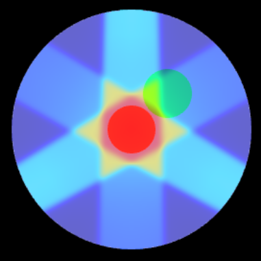
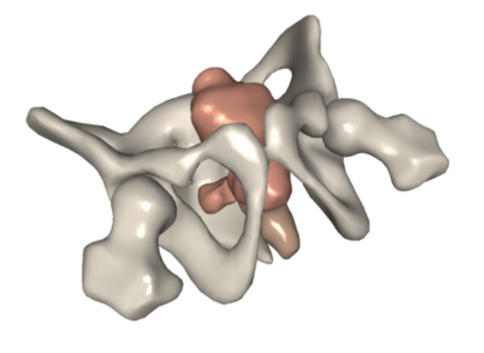
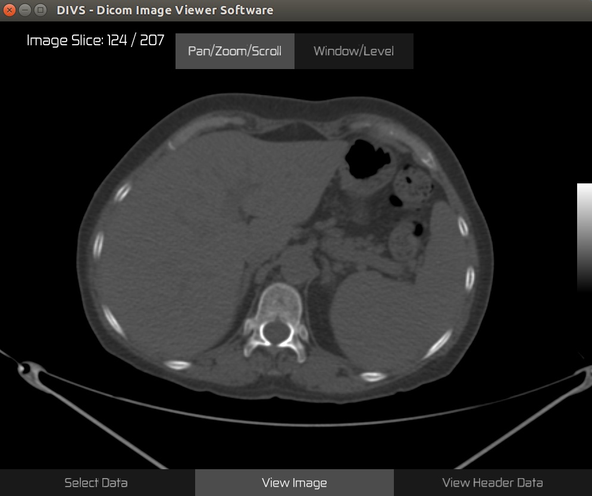

Portfolio Gallery
This photo gallery is a summary of my programming portfolio to-date.

One project I've been working on a while is a medical physics educational website. Part of the site includes web apps using WebGL to plot relevant data such as NIST attenuation coefficients. Here's an example of a plot; click/tap here to view web app.
Other web apps on the same website simulate various aspects of radiation therapy. For example, this app is a simple 2D treatment planning system for external beam radiation therapy. Click/tap here to view web app.
Part of my PhD research involved modeling organs as 3D meshes. To help with display I made a desktop visualization application utilizing OpenGL.
Another desktop application I developed also utilizes OpenGL along with GLFW and FreeType to display medical images/data.